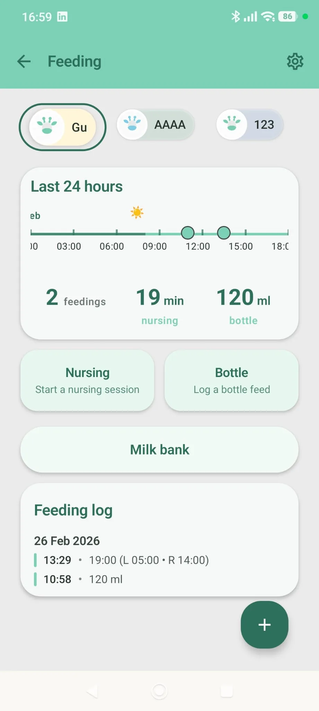

On this page · 9 sections
In short
Most newborns lose roughly 5-9% of their birth weight in the first days, and up to about 10% can still be within the normal range. The lowest point is usually around day 3-4. After that, weight starts to climb, and most babies are back to birth weight by about 10-14 days (formula-fed babies often get there a little sooner). We recommend checking with your pediatrician whenever in doubt, but especially if the loss goes beyond 10%. Weight still dropping after day 4-5, fewer than 6 wet diapers a day from about day 5, or a very sleepy baby or poor feeding are also signs to keep in mind. Your pediatrician knows your baby best, so always lean on their advice over any single number.
After 9 months of pregnancy, the birth and all its worries, you finally met your baby! Since then, new worries have come along, and many of them revolve around your baby's weight, now that you see they weigh less than at birth. And that's where the panic starts.
Take a breath. Losing some weight in the first days is expected, and most babies manage to regain weight within a couple of weeks. This guide explains what is normal, how to do the math yourself and which signs mean it is time to pick up the phone.
Why newborns lose weight
A few things happen at once in the first days of life:
- Extra fluid. Babies are born carrying extra water, and they get rid of it through the first pees.
- Meconium. That first black, sticky poop also counts for a few grams.
- Small first feeds. Colostrum, the first milk, comes in tiny amounts. Mature milk usually arrives between day 2 and day 5, and until then your baby takes in less than they let go of.
It is a bit like a very small, very sleepy baby settling into their new life: they lose a little weight, find their rhythm and start gaining. A large study of more than 100,000 exclusively breastfed newborns found that weight loss is nearly universal in the first days, and that half of vaginally born babies had lost up to 7% in the first 48 hours of life.
Day by day: the first two weeks
Every baby is different, so read these as ranges, not as a schedule your baby has to follow. The data shown here combine hospital weight charts for newborns with general guidance from pediatric organizations (see the sources at the end).
| Day | Weight: what is expected | Feeds and diapers |
|---|---|---|
| Day 0 (birth) | Birth weight is written down. Every weight you note down later is compared with this number. | Offer the first feed as soon as you and your baby are ready. |
| Day 1 | Often about 4-5% below birth weight by the end of the first day. | Feeds are small and frequent. Black, tarry first stools are normal. |
| Day 2 | Still falling, commonly around 6-8% below birth weight. | Only 2-3 wet diapers in the first 48 hours is expected. 1-2 dark stools a day. |
| Day 3-4 | Lowest point, typically around 5-9% below birth weight. Up to about 10% can still be normal. | Milk is coming in. More wet diapers. Stools turning greenish and then yellow. |
| Day 5 | The drop usually stops and weight should start going up. | 6 or more wet diapers a day. Yellow, loose stools. |
| Day 6-7 | Gaining steadily. Many babies are still a little below birth weight, and that is fine. | Feeds on demand, about 8-12 in 24 hours if breastfeeding. Wet diapers stay at 6 or more. |
| Day 8-10 | Many babies are close to birth weight or already back to it. | Wet and dirty diapers keep a steady pattern. |
| Day 10-14 | Most babies are back to birth weight, formula-fed babies often a little sooner. | Steady feeds, steady diapers, a baby who wakes up for meals. |
| After day 14 | If your baby is still below birth weight, tell your pediatrician. | Keep logging feeds and diapers to show at the visit. |
The hospital charts only follow the first few days after birth. After that, what matters is the direction: down at first, then flat for a moment, then steadily up.
Note your baby's weight and feeds in one place
Log your baby's weight and feeds in Raffy and arrive at the next check-up with clear numbers.

How to calculate the percentage lost
The formula is simple:
(birth weight − current weight) ÷ birth weight × 100 = % lost
Here is a worked example. Your baby was born at 3,400 g (7 lb 8 oz) and today weighs 3,170 g (6 lb 15.8 oz).
- Weight lost: 3,400 − 3,170 = 230 g (about 8 oz).
- Percentage: 230 ÷ 3,400 × 100 = 6.8%.
That is right in the expected range. For the same baby, 10% would be 340 g (about 12 oz), so a weight below roughly 3,060 g (about 6 lb 12 oz) would be a reason to call.
Two tips: always compare with the same birth weight, and weigh on the same scale when you can, because different scales can differ by a few grams. A hospital or clinic scale is more reliable than a kitchen scale.
Check the values
Fix the highlighted fields and press Calculate again.
Your percentage will show up here
The calculation runs in your browser: we do not save or send anything.
Result
Educational tool: it does not diagnose anything or replace your pediatrician. If your baby feeds poorly, is very sleepy or has few wet diapers, call even if the number looks normal. Designed for babies born at term.
Also available as a tool: Newborn weight loss calculator.
Breastfed and formula-fed babies
Breastfed babies often lose a little more in the first days, simply because colostrum comes in small amounts while the mother's milk production gets going. That is normal and it is not a sign that breastfeeding is failing. Feeding on demand, as often as your baby wants, day and night, is what helps the milk come in. In breastfeeding babies, 8-12 feeds in 24 hours is typical.
Formula-fed babies have more volume available from the first feeds, so they often lose a bit less and regain birth weight a little sooner. Even so, a small drop is common in the first days.
Delivery matters too. In the large study mentioned above, babies born by cesarean lost slightly more on average than vaginally born babies, and a few more of them reached the 10% mark in the first days. If your baby was born by cesarean, the team caring for you will probably watch your baby's weight a bit more closely.
Red flags: when to call the pediatrician
Most of the time, the scale is only part of the story. How your baby feeds, how alert they are and how many diapers they wet say as much as the weight. If you notice any of the signs below, call your pediatrician. And if you want to know whether they wet and dirty the diapers expected for their age, try our diaper calculator.
Pediatric safety: call your pediatrician if
- Your baby has lost more than 10% of their birth weight.
- Weight is still going down after day 4-5.
- From about day 5, there are fewer than 6 wet diapers a day, or stools are still dark and tarry instead of turning yellow.
- Yellow skin (jaundice) appears in the first 24 hours, spreads from the face down to the chest, belly or legs, or gets worse, or stools turn pale and urine dark.
- Your baby is very sleepy, hard to wake for feeds, has a weak suck or refuses to feed.
- Your baby is still below birth weight at 2 weeks of age.
Don't wait for the next check-up if your baby is limp or lethargic, cannot be woken to feed, has a dry mouth, a sunken soft spot, no wet diaper for many hours, or very yellow skin together with sleepiness or poor feeding: seek emergency care now.
This guide is educational and does not diagnose anything or replace your pediatrician's assessment; they know your baby and their history.
How to keep track without stress
You do not need to turn your living room into a lab. A simple routine is enough:
- Go to the weight checks your pediatrician or midwife schedules, and ask for the exact number each time.
- If you weigh your baby at home, try to use the same scale, at the same time of day and in the same clothes (or none).
- Count wet and dirty diapers and write down feeds, so you can answer questions at the visit.
- Look at the trend, not a single number: one odd reading rarely tells the whole story.
Once your baby is growing steadily, you can see where they stand with our WHO percentile calculator and learn to read the charts in our guide to baby weight and height percentiles. If a low percentile worries you later on, read when a low percentile is nothing to worry about. And to keep your baby's weight and feeds in one place, that is what we built Raffy for.
Frequently asked questions
How much weight loss is normal for a newborn?
Most newborns lose roughly 5-9% of their birth weight in the first days, and up to about 10% can still be within the normal range. The lowest point is usually around day 3-4, and weight then starts to climb. Babies born by cesarean tend to lose a little more.
When do newborns get back to their birth weight?
Most babies are back to birth weight by about 10-14 days, and formula-fed babies often get there a little sooner. If your baby is still below birth weight at 2 weeks, tell your pediatrician.
Is a 10% weight loss dangerous?
Up to about 10% can still be within the normal range, so it is not an emergency on its own. But a loss beyond 10% is a reason to call your pediatrician the same day so someone can check how feeding is going and whether your baby is getting enough milk.
Does weight loss mean I should switch to formula?
Not by itself. Some weight loss is expected in every newborn. If your baby has lost more than 10% or is not gaining after day 4-5, your pediatrician or a lactation consultant will look at feeding and tell you whether any extra milk is needed. Please do not decide this alone.
How many wet diapers should my newborn have?
In the first 48 hours only 2-3 wet diapers is expected. From about day 5, expect 6 or more wet diapers a day. Fewer than 6 from day 5 onward is worth a call to your pediatrician.
Do I need to weigh my newborn at home?
No. Your pediatrician or midwife will weigh your baby at check-ups and tell you when to come back. If you do weigh at home, use the same scale, the same time of day and the same clothing, and look at the trend rather than a single number.
Sources
- American Academy of Pediatrics · HealthyChildren.orgHow to Tell if Your Breastfed Baby is Getting Enough Milk
- American Academy of Pediatrics · HealthyChildren.orgWarning Signs of Breastfeeding Problems
- American Academy of Pediatrics · HealthyChildren.orgJaundice in Newborns
- American Academy of Pediatrics · HealthyChildren.orgSigns of Dehydration in Infants & Children
- NHS (UK)Breastfeeding: is my baby getting enough milk?
- NHS (UK)Jaundice in newborns
- World Health OrganizationBreastfeeding
- Pediatrics (2015) · Flaherman et al.Early weight loss nomograms for exclusively breastfed newborns
- Pediatrics (2016) · Paul et al.Weight change nomograms for the first month after birth
- NEWT · Penn State and UCSFNewborn Weight Tool (NEWT)
We checked this article against these sources on Nov 4, 2026. It is educational, not medical advice. Editorial policy